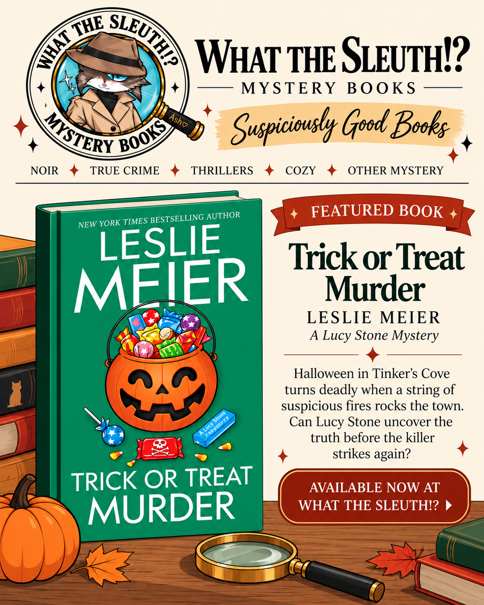

Brand
Carry the bookstore’s noir-inspired personality into a lighter seasonal promotion without losing brand recognition.
E-COMMERCE · SOCIAL MEDIA · MERCHANDISING
A featured-book Instagram concept created for What the Sleuth!?, an independent mystery bookstore, to promote Leslie Meier’s Trick or Treat Murder while reinforcing the store’s “Suspiciously Good Books” identity.

THE PROJECT
The goal was to create a seasonal featured-book graphic that felt unmistakably connected to What the Sleuth!? while keeping the product—the book—at the center of the composition.
The final creative combines the bookstore’s detective-cat branding, “Suspiciously Good Books” tagline, a concise mystery hook, and a clear availability call-to-action. The layout was refined for Instagram’s portrait feed format so the title, cover, and CTA remain easy to scan on a phone.
Carry the bookstore’s noir-inspired personality into a lighter seasonal promotion without losing brand recognition.
Make the featured title the visual focus and connect book discovery directly to product availability.
Use hierarchy and concise copy to move viewers from recognition to interest to a clear “Available Now” action.
CREATIVE PROCESS
“Suspiciously Good Books” bridges the store’s established identity and the seasonal campaign.
SKILLS DEMONSTRATED
PORTFOLIO TAKEAWAY
This project demonstrates how I approach e-commerce content as both an operational and marketing problem: choose the product, frame the story, maintain the brand, design for the channel, and give the customer a clear next step.